Mechanism design, manufacturing & IoT
BIC extrusion cutter
A single motor. A synchronized cutting system.
An academic team project translating an industrial cutting problem into a manufactured, instrumented prototype.
Academic team project · BIC
Engineering decisions, evidence and lessons from the team presentation.
01 / The production problem
Inconsistent extrusion cut lengths created material waste and rework. The existing equipment used a continuous motor and a servomotor, while the proposed redesign sought simpler synchronization and a path to production monitoring.
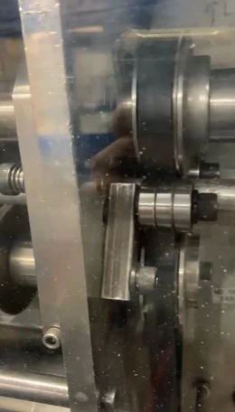
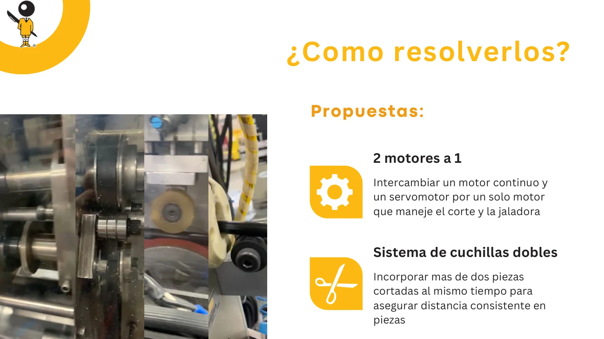
02 / From concept to integrated CAD
The concept mechanically couples feeding and cutting. A Geneva mechanism converts continuous rotation into intermittent indexing; the reduction train increases available torque. The double-blade arrangement aims to maintain regular cut spacing while reducing the rotational speed needed for a given nominal production rate.
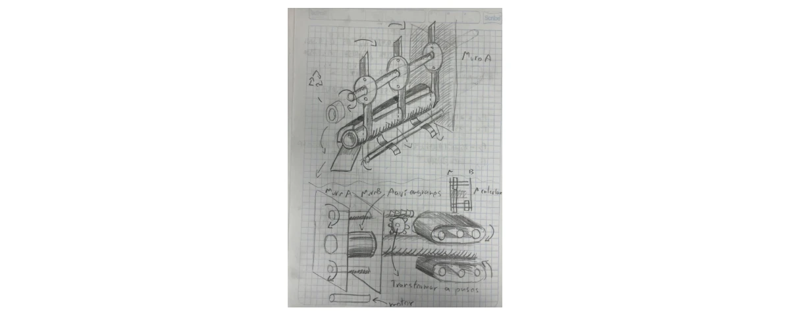
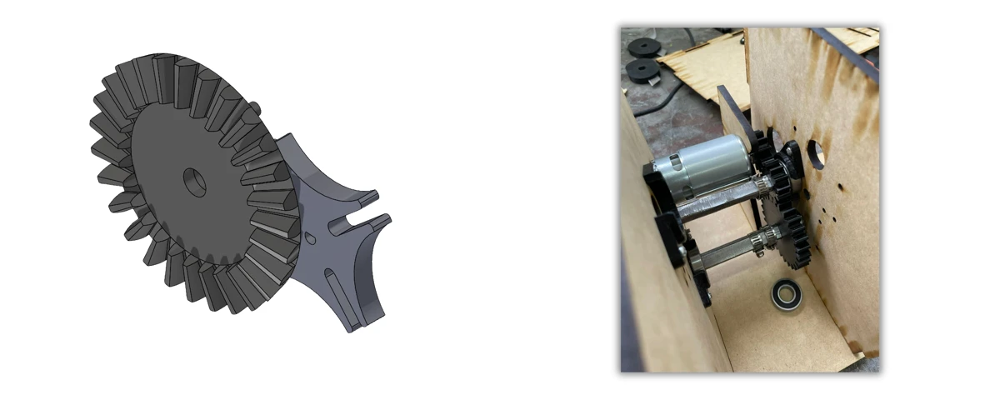
Individual components were modeled in SolidWorks and assembled into three modules: feed rollers, gearbox and cutter. Shaft alignment, gear engagement and support plates connect the modules inside a protective enclosure.
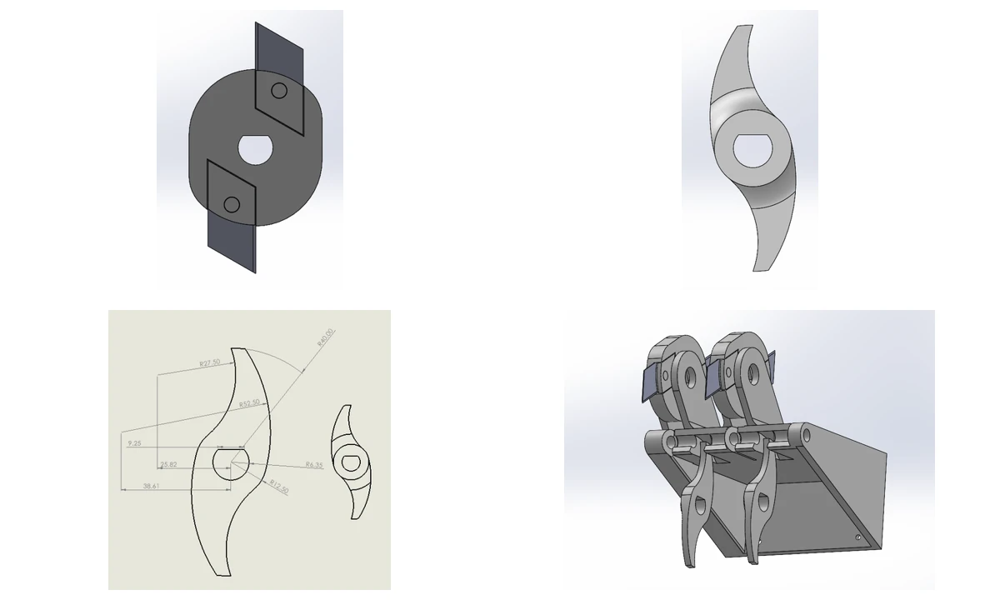
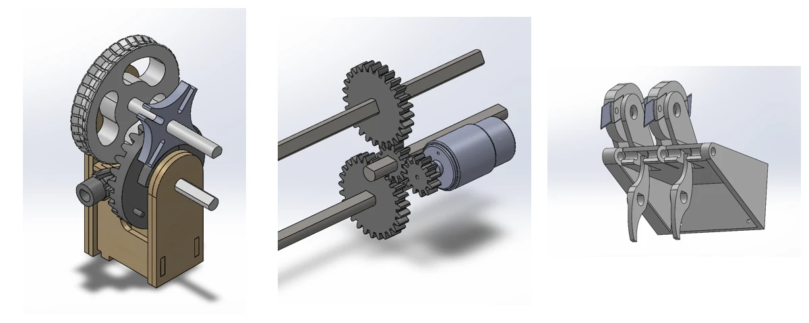
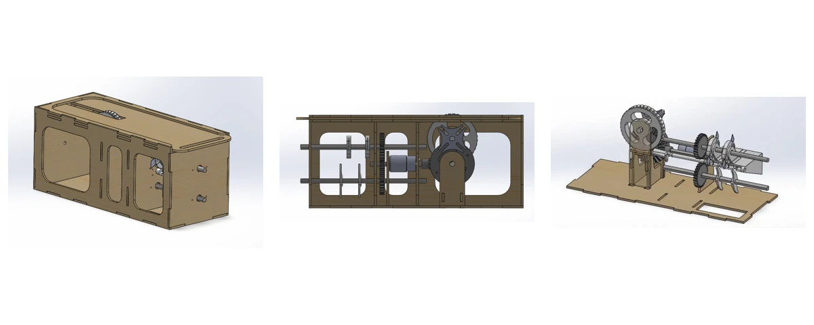
03 / Manufacturing, assembly & monitoring
The team combined laser-cut enclosure and support parts, 3D-printed components and machining. Assembly brought the transmission, feeder, cutting mechanism and electronics together before operating the enclosed prototype.
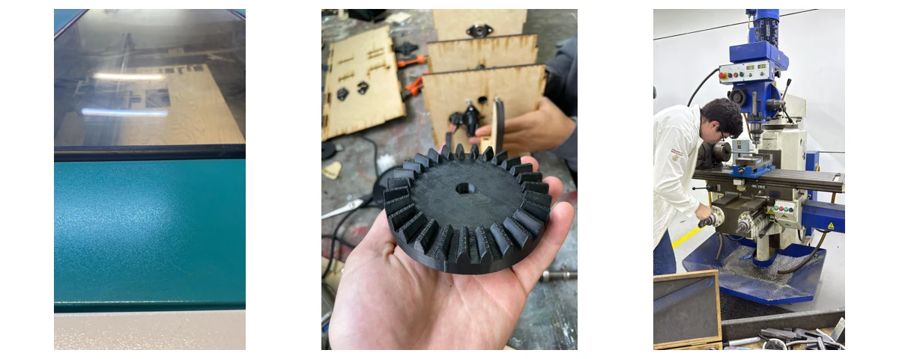
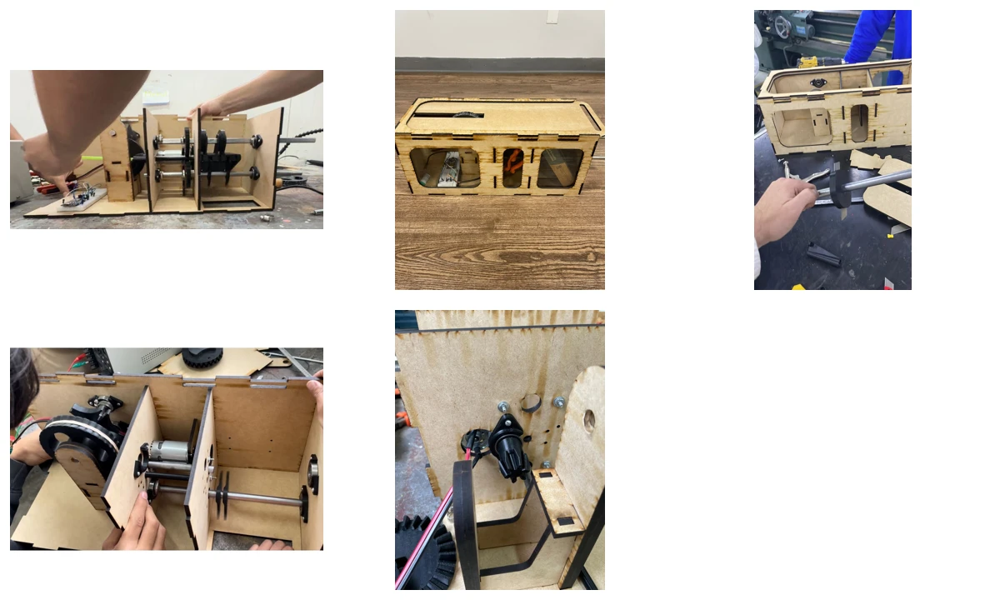
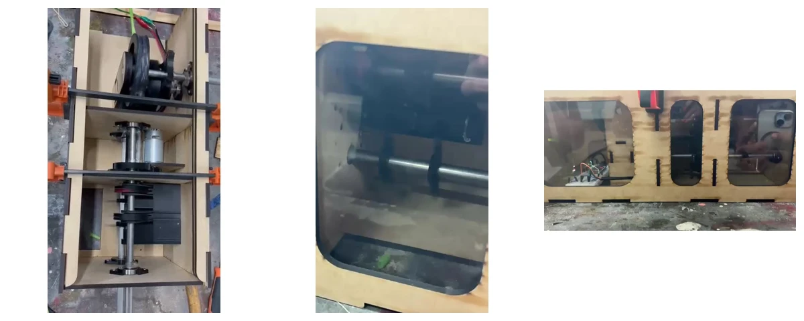
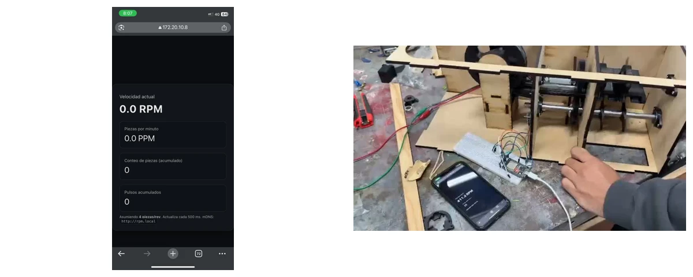
The IoT concept adds a revolution counter and a monitoring interface. This creates a basis for tracking operating behavior; the presentation does not establish a validated production-control system.
04 / Prototype in motion
Two recordings document operation of the built mechanism. They show the prototype behavior; they are not a sustained production-rate test.
05 / Results & next iteration
Testing also exposed power-supply/controller failures, friction losses, feed slip, inconsistent cuts and gear fracture under cutting load. These observations define the next design iteration.
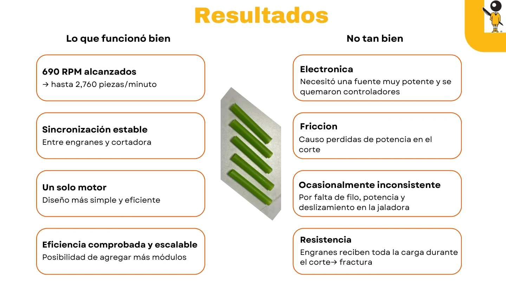
Reported results · English
| Reported outcome | Engineering interpretation |
|---|---|
| 690 RPM | Speed reported in the team presentation. |
| Up to 2,760 pieces/min | Theoretical rate stated in the presentation; sustained cutting output was not demonstrated. |
| Single-motor synchronization | Feeder, gears and cutter operated through a shared mechanical drive. |
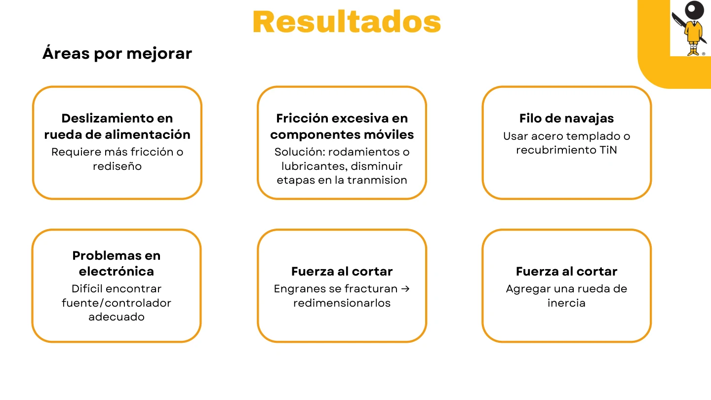
Observed issues & proposed improvements
| Observed issue | Proposed next step |
|---|---|
| Feed-wheel slip | Increase traction or redesign the feeder contact. |
| Excessive mechanism friction | Add bearings and lubrication; reduce transmission stages. |
| Insufficient blade sharpness | Evaluate hardened steel or TiN-coated blades. |
| Power supply / controller failures | Select electronics appropriate for the operating load. |
| Gear fracture during cutting | Resize the gears for cutting loads. |
| High cutting-force demand | Evaluate a flywheel to manage cutting transients. |
- Redesign the feeder contact to reduce slip and improve material traction.
- Reduce friction with bearings, lubrication and fewer transmission stages.
- Improve blade sharpness and evaluate hardened steel or TiN-coated blades.
- Match the power supply and controller to the load; resize gears and evaluate a flywheel for cutting transients.
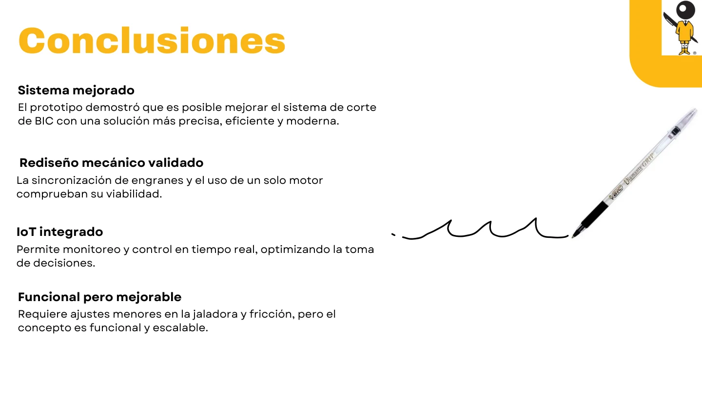
Team conclusions · English
| Finding | Meaning |
|---|---|
| Functional prototype | The integrated mechanism operated with one motor and synchronized feeding and cutting. |
| Monitoring integration | A revolution counter provided a basis for operational monitoring. |
| Further development needed | Feed traction, friction, blade performance and component strength remained improvement areas. |
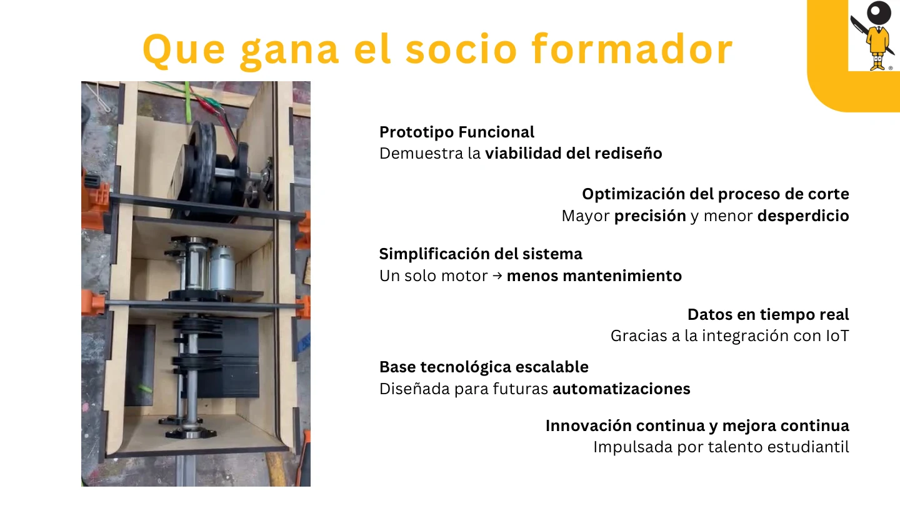
Intended partner benefits · English
| Area | Intended benefit |
|---|---|
| Cut consistency | Improve precision and reduce material waste through further development. |
| Mechanical simplification | Use one motor to synchronize the feeder and cutter. |
| Operational data | Provide real-time monitoring through the IoT concept. |
| Future development | Create a prototype platform for additional automation. |
Academic team project · Diseño de mecanismos, M2004B · 23 October 2025. Team Tuerca Madre: María Valeria Castañeda Villagran, Valeria Miramontes Dubost, Luca Trevellini Campos, Luis Enrique Flores Rascon and Roberto Guagnelli García.